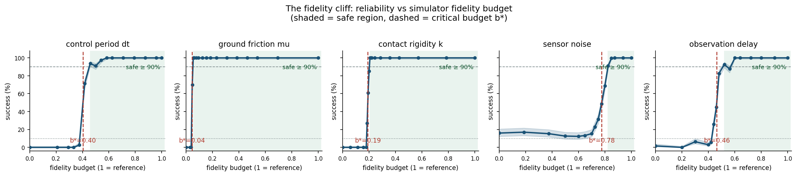

Headline
mu: 100% → 0% in Δmu = 0.01
Second
noise floor 12–17% — graceful
What this project is
One PD push policy, calibrated at reference fidelity, replayed unchanged across 84 budget cells × 300 seeds as five physical knobs degrade. Four of five knobs are critical-point cliffs — friction loses all reliability over a 0.01-wide step (mu 0.185 → 0.175, 100% → 0%) — while only sensor noise degrades gracefully and never collapses below a 12–17% floor. The failure mode names the broken knob: escape = friction, timeout = dt / k / delay.
Read the technical report →
Credibility at a glance
84 budget cells × 300 seeds (25,200 episodes) · within-simulator protocol, no real hardware